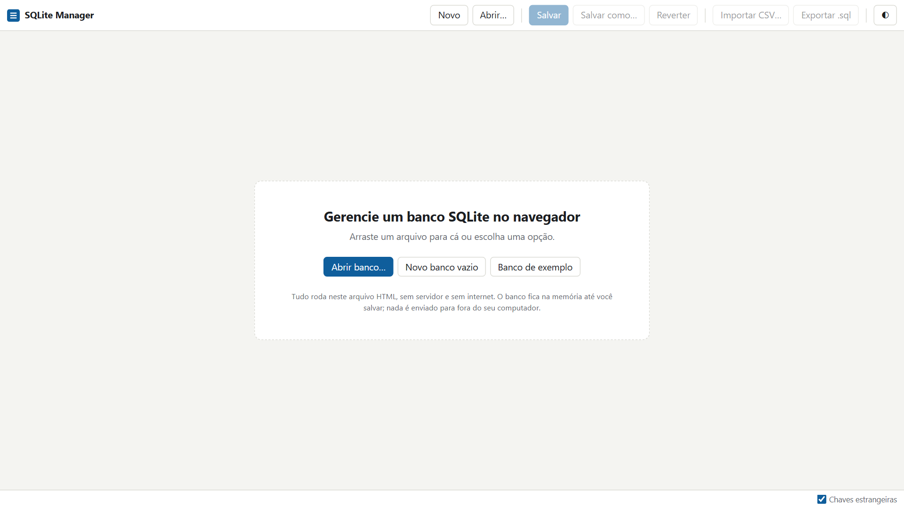
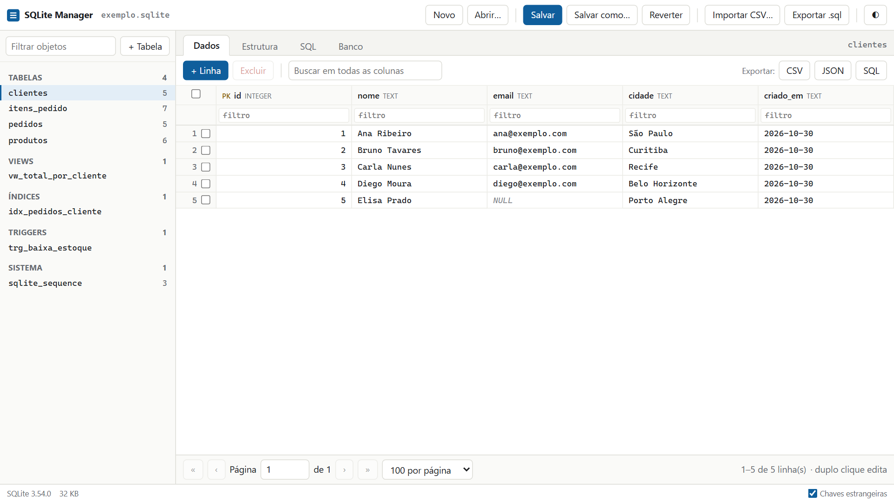
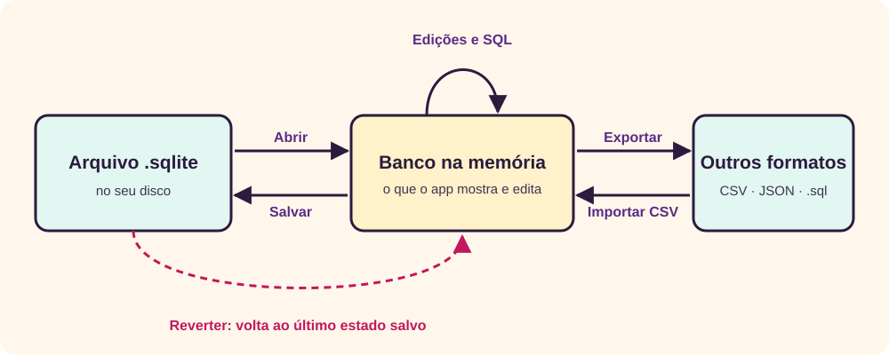
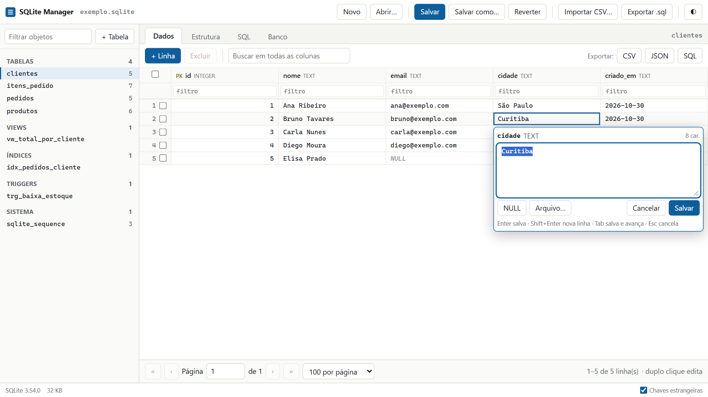
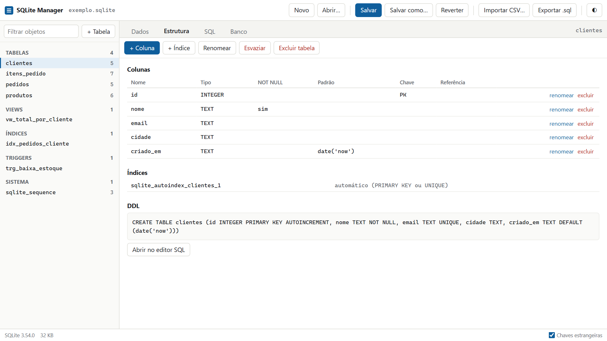
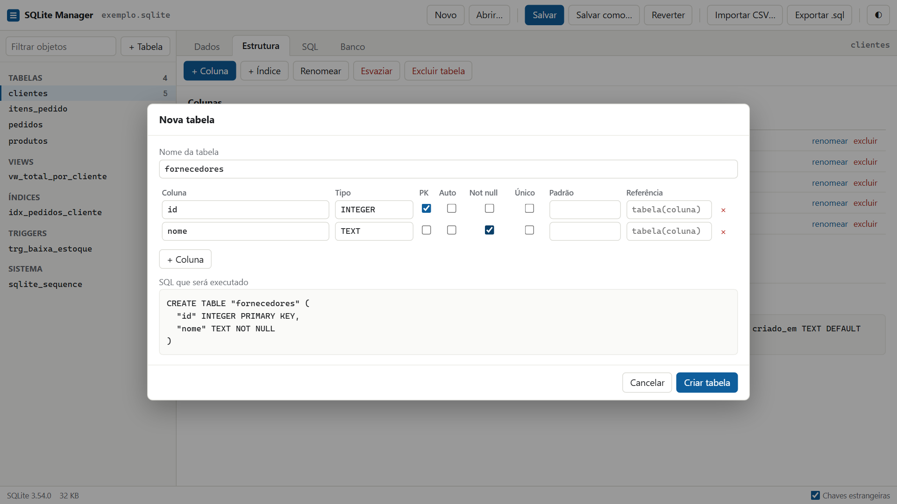
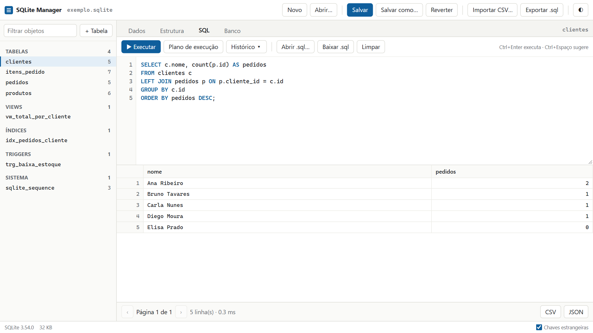
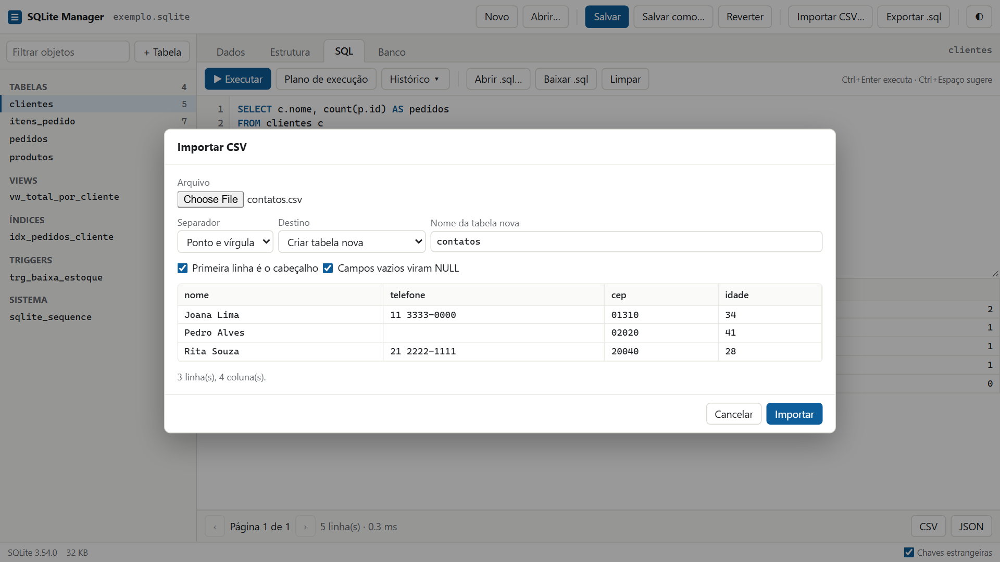
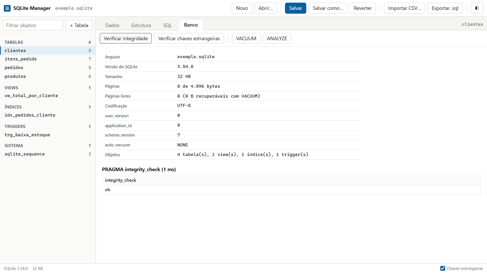

O que é o SQLite Manager
O SQLite Manager abre, consulta, edita e salva bancos de dados SQLite usando apenas o navegador. Ele é um único arquivo HTML: não há instalação, servidor nem conta. [1] O motor do banco é o próprio SQLite, compilado para WebAssembly e embutido no arquivo. [2]

Este manual serve para quem quer gerenciar um banco sem instalar nada. As tarefas do dia a dia não exigem SQL; a aba SQL atende quem já conhece a linguagem.
O que você precisa
- Um navegador atual. Chrome e Edge são os recomendados, porque gravam direto no arquivo original.
- O arquivo
sqlite-manager.html. Use o link acima ou salve a página e abra a cópia, que funciona sem internet.
Como o app trata os seus dados
- Nada sai do seu computador. O banco é processado dentro do navegador, e o arquivo HTML bloqueia conexões de rede.
- O banco é editado na memória. O arquivo em disco só muda quando você salva.
- O navegador guarda poucas coisas. Tema, tamanho de página, texto do editor SQL e histórico de consultas ficam no armazenamento local. O conteúdo do banco não fica, mas valores escritos em consultas ficam no histórico.
Primeiros passos
Em cerca de dez minutos, este roteiro passa pelas principais funções usando o banco de exemplo, sem risco para dados reais. O exemplo tem clientes, produtos, pedidos e itens de pedido.
1. Abra o exemplo
- Abra o SQLite Manager.
- Clique em Banco de exemplo. A tabela
clientesaparece na aba Dados.
2. Encontre um registro
- Na linha de filtros, abaixo do título da coluna
cidade, digiterecife. Sobra apenas Carla Nunes. - Apague o filtro para ver as cinco linhas de novo.
- Clique no título da coluna
nomepara ordenar. Clique de novo para inverter e uma terceira vez para desfazer.
3. Edite e insira dados
- Dê um duplo clique na cidade de Ana Ribeiro, digite
Campinase pressione Enter. O aviso ● não salvo aparece na barra superior. - Clique em + Linha, preencha
nomee clique em Inserir. As demais colunas recebem o valor padrão.
4. Siga uma referência
- Na lista à esquerda, clique em
pedidos. - Na coluna
cliente_id, clique na seta ↗ ao lado de um valor. O app abreclientesfiltrada nesse cliente.
5. Execute SQL
- Abra a aba SQL, escreva a consulta abaixo e pressione Ctrl+Enter. O resultado mostra o total por cliente.
SELECT * FROM vw_total_por_cliente; - Troque o texto pelo comando abaixo e execute. A mensagem informa 2 linhas alteradas: o item inserido e o estoque baixado pelo trigger
trg_baixa_estoque.INSERT INTO itens_pedido VALUES (4, 1, 1, 349.9); - Clique em
produtos. A aba Dados abre, e o estoque do teclado caiu de 39 para 38.
6. Desfaça ou salve
- Para desfazer tudo, clique em Reverter e confirme. O exemplo volta ao estado inicial.
- Para guardar uma cópia, clique em Salvar e escolha onde gravar.
A interface
A tela tem quatro áreas fixas, e as quatro abas mudam apenas a área central. Depois de aberto um banco, a tela fica assim:

- Barra superior
- Arquivo (Novo, Abrir…, Salvar, Salvar como…, Reverter), Importar CSV…, Exportar .sql e o botão ◐, que alterna entre tema claro e escuro.
- Lista de objetos
- Tabelas, views, índices, triggers e tabelas do sistema, com o número de linhas de cada tabela. O campo acima filtra a lista, e + Tabela cria uma tabela.
- Abas
- Dados mostra as linhas, Estrutura mostra e altera o esquema, SQL executa comandos e Banco traz informações e manutenção.
- Barra de status
- Versão do SQLite, tamanho do banco, aviso de transação aberta e a opção Chaves estrangeiras.
Abrir, salvar e reverter
Tudo o que você faz altera uma cópia na memória; o arquivo em disco só muda quando você salva. Esse é o conceito mais importante do app:

Abrir ou criar um banco
| Como | O que acontece |
|---|---|
| Abrir… | Escolhe um arquivo .db, .db3, .sqlite, .sqlite3, .s3db ou .sl3. Atalho: Ctrl+O. |
| Arrastar e soltar | Solte o arquivo em qualquer ponto da janela. |
| Novo | Cria um banco vazio chamado novo.sqlite e abre a aba SQL. |
| Banco de exemplo | Disponível na tela inicial. Traz tabelas, view, índice e trigger para praticar. |
Se o banco atual tiver alterações não salvas, o app pede confirmação antes de trocar. Arquivos que não são SQLite, ou que estão criptografados, são recusados, e o banco atual continua aberto.
Salvar
O indicador ● não salvo mostra que há alterações só na memória. O app também avisa se você tentar fechar a aba nessa situação.
| Ação | Chrome e Edge | Outros navegadores |
|---|---|---|
| Salvar (Ctrl+S) | Grava no arquivo original. O navegador pede permissão na primeira vez. [7] | Baixa uma cópia para a pasta de downloads. |
| Salvar como… | Pergunta nome e local, e esse arquivo passa a ser o atual. | Baixa uma cópia para a pasta de downloads. |
No Chrome e no Edge, se outro programa tiver alterado o arquivo depois da abertura, o app pede confirmação antes de substituir. Para manter as duas versões, cancele e use Salvar como….
Reverter
Reverter descarta tudo o que foi feito desde a abertura ou o último salvamento. É o único “desfazer” do app: não há desfazer passo a passo. Antes de uma alteração arriscada, salve; assim, o ponto de retorno fica logo antes dela.
Bancos em modo WAL
Alguns programas usam o modo WAL, que mantém alterações recentes em um arquivo -wal ao lado do banco. [5] O navegador recebe apenas o arquivo principal, então o app avisa ao abrir e toma duas medidas:
- Abre o banco sem o conteúdo do
-wal. Para ver os dados mais recentes, feche antes o programa que usa o banco. - Não grava sobre o original. Salvar pede um arquivo novo, e a sugestão de nome termina em
-copia. Não sobrescreva o original, porque um-walantigo ao lado dele pode corromper os dados.
Aba Dados
A aba Dados mostra as linhas da tabela ou view selecionada, e nela você busca, edita, insere e exclui sem escrever SQL.
Navegar e ordenar
- Os controles abaixo da grade trocam de página. Escolha 50, 100, 500 ou 1000 linhas por página.
- Clique no título de uma coluna para ordenar: crescente, decrescente e sem ordem. A ordenação usa uma coluna por vez.
- O marcador PK identifica colunas da chave primária.
- Valores nulos aparecem como NULL em itálico, e dados binários como BLOB com o tamanho.
Filtrar e buscar
Cada coluna tem um campo de filtro, e filtros em colunas diferentes valem juntos. O campo Buscar em todas as colunas procura o texto em qualquer coluna. Limpar filtros remove tudo.
| Você digita | Encontra |
|---|---|
ana | Valores que contêm “ana”. |
=Recife ou !=Recife | Valor igual ou diferente, respeitando maiúsculas. |
>10, >=10, <10, <=10 | Comparações, também com datas no formato 2026-10-30. |
NULL ou !NULL | Células vazias ou preenchidas. |
Editar uma célula
Dê um duplo clique na célula. Com o teclado, clique uma vez, mova-se com as setas e pressione Enter ou F2.

| No editor | Efeito |
|---|---|
| Enter | Salva. |
| Shift+Enter | Quebra a linha. |
| Tab e Shift+Tab | Salva e vai para a célula seguinte ou anterior. |
| Esc | Cancela. |
| Botão NULL | Grava NULL. |
| Botão Arquivo… | Grava o conteúdo de um arquivo como BLOB. |
A diferença entre NULL e texto vazio importa. Numa célula NULL, confirmar sem digitar mantém o NULL. Para gravar texto vazio nela, use a aba SQL. Numa célula com valor, apagar o texto e salvar grava texto vazio.
O SQLite converte o valor conforme o tipo da coluna: 42 vira número numa coluna INTEGER. [3] Um texto como abc pode ser aceito na mesma coluna, a menos que a tabela seja STRICT.
Trabalhar com BLOBs
Dados binários não são editados como texto. O editor mostra o conteúdo em hexadecimal ou, em imagens PNG, JPEG, GIF e WebP, uma prévia. Use Baixar para extrair o arquivo e Arquivo… para substituí-lo.
Inserir linhas
Clique em + Linha. Cada coluna tem um modo, e digitar muda o modo para valor automaticamente:
- valor grava o que foi digitado, mesmo vazio.
- NULL grava nulo.
- padrão deixa o SQLite decidir: gera o número da chave automática, aplica o
DEFAULTou grava NULL.
Marque Continuar adicionando para inserir várias linhas em sequência. Colunas geradas não aparecem no formulário. Para gravar um BLOB, insira a linha e depois edite a célula.
Excluir linhas
- Marque as caixas das linhas desejadas. A caixa do cabeçalho marca toda a página.
- Clique em Excluir e confirme.
A exclusão é tudo ou nada: se uma linha falhar, nenhuma é excluída. A seleção vale só para a página atual e é limpa ao mudar de página, filtrar, ordenar ou editar.
Seguir chaves estrangeiras
Colunas com chave estrangeira mostram ↗ ao lado do valor. O clique abre a tabela referenciada, filtrada no registro correspondente.
Quando a grade é somente leitura
Views nunca são editáveis nesta aba. Colunas geradas também não. Uma tabela fica somente leitura quando não há como identificar suas linhas: sem chave primária e com colunas chamadas rowid, _rowid_ e oid. Nesse caso, use a aba SQL.
Aba Estrutura
A aba Estrutura mostra o esquema do objeto selecionado e altera tabelas, colunas e índices sem escrever SQL.

Criar uma tabela
- Clique em + Tabela e dê um nome à tabela.
- Preencha uma linha por coluna. A primeira já vem como
id INTEGERcom chave primária. - Confira o comando em SQL que será executado e clique em Criar tabela.

- PK
- Chave primária. Marque em mais de uma coluna para criar uma chave composta.
- Auto
- Acrescenta
AUTOINCREMENT. Exige uma única coluna PK do tipoINTEGER. - Not null
- A coluna não aceita NULL.
- Único
- Não permite valores repetidos.
- Padrão
- Valor usado quando nada é informado. Números,
NULL,CURRENT_TIMESTAMP, textos entre aspas simples e expressões entre parênteses são usados como estão; o restante vira texto. - Referência
- Chave estrangeira, no formato
tabela(coluna).
Alterar uma tabela existente
| Ação | Onde | Observação |
|---|---|---|
| Adicionar coluna | + Coluna | Com NOT NULL, um valor padrão é obrigatório. |
| Renomear coluna | renomear, na linha da coluna | O SQLite ajusta as referências a ela no esquema. |
| Excluir coluna | excluir, na linha da coluna | Recusado se a coluna for chave primária, única ou usada por um índice. [6] |
| Criar índice | + Índice | As colunas ficam na ordem da tabela; para outra ordem, use SQL. |
| Renomear tabela | Renomear | |
| Esvaziar tabela | Esvaziar | Exclui as linhas e mantém a estrutura. |
| Excluir objeto | Excluir tabela, view, índice ou trigger | Com chaves estrangeiras ligadas, excluir uma tabela aplica as regras ON DELETE de quem a referencia. |
Mudar o tipo de uma coluna
O SQLite não altera o tipo de uma coluna diretamente. [6] Recrie a tabela na aba SQL, dentro de uma transação. O botão Abrir no editor SQL copia o DDL atual para servir de ponto de partida.
-- Exemplo: a coluna idade de contatos passa de TEXT para INTEGER
BEGIN;
CREATE TABLE contatos_novo (id INTEGER PRIMARY KEY, nome TEXT, idade INTEGER);
INSERT INTO contatos_novo SELECT id, nome, idade FROM contatos;
DROP TABLE contatos;
ALTER TABLE contatos_novo RENAME TO contatos;
COMMIT;Recrie depois os índices e triggers da tabela, porque DROP TABLE os remove. Se outras tabelas a referenciarem, desligue Chaves estrangeiras antes do BEGIN; ligue de novo ao terminar e rode Verificar chaves estrangeiras.
Views e triggers
Crie views e triggers na aba SQL. Depois, eles aparecem na lista de objetos, onde a aba Estrutura mostra o DDL e permite excluí-los.
Aba SQL
A aba SQL executa qualquer comando que o SQLite aceite, um ou vários de cada vez, e mostra os resultados abaixo do editor.

Executar comandos
- Ctrl+Enter ou ▶ Executar rodam todo o texto. Com um trecho selecionado, roda só o trecho.
- Separe vários comandos com
;. Cada consulta gera uma aba de resultado. - Se um comando falhar, a execução para ali e o erro indica qual foi. Os comandos anteriores continuam aplicados; para evitar isso, use uma transação.
- A contagem de linhas alteradas inclui as mudanças feitas por triggers.
Escrever mais rápido
- As sugestões aparecem a partir de duas letras, ou logo após um ponto, como em
c., e reconhecem apelidos de tabela. - Ctrl+Espaço abre as sugestões. ↑ e ↓ escolhem, Tab ou Enter aceitam e Esc fecha.
- Fora das sugestões, Tab insere dois espaços.
- O texto do editor continua lá quando você reabre o app.
Resultados
Os resultados são paginados de 200 em 200 linhas, e os botões CSV e JSON exportam o conjunto todo. Cada consulta guarda até 100.000 linhas e avisa quando o limite é atingido. Para resultados maiores, refine a consulta ou use LIMIT.
Plano de execução
Plano de execução mostra como o SQLite resolveria o primeiro comando, sem executá-lo. Nos planos, SCAN indica leitura da tabela inteira e SEARCH, em geral, uso de índice ou chave.
Transações
Use transações para aplicar várias mudanças como uma só. Depois de BEGIN, a barra de status mostra Transação aberta com os botões COMMIT e ROLLBACK.
BEGIN;
UPDATE produtos SET preco = preco * 1.10 WHERE categoria = 'Acessórios';
-- confira o resultado e clique em COMMIT ou ROLLBACK na barra de statusEdições feitas na aba Dados durante a transação fazem parte dela. Ao salvar com uma transação aberta, o app pergunta se deve fazer COMMIT ou ROLLBACK antes.
Histórico e arquivos
- Histórico ▾ guarda os últimos 50 comandos executados. O clique os devolve ao editor.
- Abrir .sql… carrega um script no editor sem executá-lo, e Baixar .sql salva o texto do editor.
- Limpar apaga o texto do editor.
Exemplos úteis
-- Criar uma view
CREATE VIEW vw_estoque_baixo AS
SELECT nome, estoque FROM produtos WHERE estoque < 20;
-- Criar um trigger
CREATE TRIGGER trg_status AFTER UPDATE OF status ON pedidos
BEGIN
UPDATE pedidos SET data = date('now') WHERE id = NEW.id;
END;
-- Encontrar valores duplicados
SELECT email, count(*) FROM clientes
GROUP BY email HAVING count(*) > 1;
-- Gravar texto vazio numa célula NULL
UPDATE clientes SET email = '' WHERE id = 5;Importar e exportar
O app importa CSV e exporta CSV, JSON, SQL e o próprio arquivo do banco. A importação é tudo ou nada: se uma linha falhar, nada é gravado.
Importar um CSV
- Clique em Importar CSV… e escolha o arquivo, que deve estar em UTF-8.
- Confira o Separador, detectado automaticamente entre vírgula, ponto e vírgula, tab e barra vertical.
- Em Destino, escolha Criar tabela nova ou Adicionar em uma tabela existente.
- Ajuste Primeira linha é o cabeçalho e Campos vazios viram NULL, confira a prévia e clique em Importar.

Em tabela nova, o app escolhe o tipo de cada coluna entre INTEGER, REAL e TEXT, olhando os valores. Valores com zero à esquerda, como o CEP 01310, continuam como texto e não perdem o zero. Números com vírgula decimal, como 7,5, também ficam como texto.
Em tabela existente, se todos os nomes do cabeçalho existirem na tabela, as colunas são ligadas pelo nome. Caso contrário, são ligadas pela posição.
Exportar
| Formato | Onde | O que leva |
|---|---|---|
| CSV, JSON ou SQL de uma tabela | Aba Dados, botões à direita | Todas as páginas, respeitando filtros e ordem. |
| CSV ou JSON de um resultado | Aba SQL, abaixo do resultado | Todas as linhas guardadas da consulta. |
| Script do banco inteiro | Exportar .sql | Estrutura e dados, exceto o conteúdo de tabelas virtuais. |
| Arquivo do banco | Salvar como… | Tudo, inclusive tabelas virtuais. |
Para fazer cópia de segurança, prefira Salvar como…, que preserva o banco por completo.
- CSV
- UTF-8 com marca BOM e separado por vírgula. NULL vira campo vazio e BLOB vira
0xmais hexadecimal. Se o Excel juntar tudo numa coluna, importe pelo menu de dados dele e indique a vírgula. - JSON
- Lista de objetos. BLOB vira
{"$hex": "..."}, e inteiros grandes demais para JavaScript viram texto, para não perder precisão. - SQL
- Comandos
INSERT; no banco inteiro, também oCREATEde cada objeto, dentro de uma transação.
Aba Banco
A aba Banco resume o arquivo e reúne as verificações e a manutenção. Vale consultá-la antes de um salvamento importante.

| Botão | O que faz | Quando usar |
|---|---|---|
| Verificar integridade | Procura danos na estrutura do arquivo. O resultado esperado é ok. | Ao receber um arquivo ou suspeitar de corrupção. |
| Verificar chaves estrangeiras | Lista linhas que apontam para registros inexistentes. | Depois de importar dados ou trabalhar com a opção desligada. |
| VACUUM | Reconstrói o banco e recupera as páginas livres. | Depois de excluir muitos dados. |
| ANALYZE | Atualiza as estatísticas que orientam as consultas. | Depois de grandes cargas, ou se consultas ficarem lentas. |
VACUUM e ANALYZE alteram o banco, então é preciso salvar depois. VACUUM não roda com uma transação aberta.
Chaves estrangeiras
A opção Chaves estrangeiras, na barra de status, vem ligada, ao contrário do padrão do SQLite. [4] Assim, excluir um registro referenciado por outra tabela dá erro, em vez de deixar dados órfãos. A escolha vale para o app e não fica gravada no arquivo. Ela não muda durante uma transação.
Atalhos de teclado
| Onde | Tecla | Ação |
|---|---|---|
| Geral | Ctrl+S | Salvar |
| Geral | Ctrl+O | Abrir |
| Grade | ↑ ↓ ← → | Mover entre células |
| Grade | Enter ou F2 | Editar a célula atual |
| Grade | Ctrl+C | Copiar o valor da célula atual |
| Editor de célula | Enter | Salvar |
| Editor de célula | Shift+Enter | Quebrar a linha |
| Editor de célula | Tab ou Shift+Tab | Salvar e ir para a célula seguinte ou anterior |
| Editor de célula | Esc | Cancelar |
| Editor SQL | Ctrl+Enter | Executar o texto ou a seleção |
| Editor SQL | Ctrl+Espaço | Abrir sugestões |
| Editor SQL | Tab | Aceitar a sugestão ou inserir dois espaços |
Limitações e solução de problemas
Limitações
- Bancos grandes: o arquivo inteiro é carregado na memória, então bancos de vários gigabytes não são adequados.
- Consultas longas: a tela fica travada até a consulta terminar.
- Acesso simultâneo: o app trabalha numa cópia e não enxerga mudanças que outro programa faça depois da abertura.
- Navegadores: o app foi testado no Chromium. O uso no Firefox e no Safari não foi testado.
- Bancos criptografados: não são suportados.
Problemas comuns
| Sintoma | Causa provável | O que fazer |
|---|---|---|
| “não é um banco SQLite válido” | O arquivo é de outro tipo ou está criptografado. | Confira o arquivo. Bancos criptografados precisam ser decifrados antes em outro programa. |
| Dados recentes não aparecem | Estão no arquivo -wal. | Feche o programa que usa o banco, para que ele transfira os dados, e abra de novo. |
FOREIGN KEY constraint failed | Outra tabela referencia o registro, ou o valor informado não existe na tabela de origem. | Ajuste os registros relacionados. Em último caso, desligue a opção e rode depois a verificação de chaves. |
UNIQUE constraint failed | O valor já existe na coluna. | Use outro valor ou corrija o registro existente. |
NOT NULL constraint failed | Faltou o valor de uma coluna obrigatória. | Informe o valor no formulário ou no comando. |
| “Não foi possível salvar” | O navegador não recebeu permissão, ou o arquivo está bloqueado por outro programa. | Conceda a permissão e feche o outro programa, ou use Salvar como…. As alterações continuam na memória. |
| + Linha desativado | É uma view ou uma tabela sem identificação de linha. | Use a aba SQL. |
| CSV com acentos estranhos | O arquivo não está em UTF-8. | Converta para UTF-8 antes de importar. |
| Coluna numérica tratada como texto após importar | Há vírgula decimal ou algum valor não numérico. | Troque a vírgula por ponto no arquivo ou converta com UPDATE. |
| Salvar baixa uma cópia em vez de gravar no arquivo | O navegador não oferece gravação direta. | Use Chrome ou Edge e abra o arquivo por Abrir… ou arrastando. |
Revisão rápida
Tente responder antes de abrir cada pergunta.
1. Editei várias células e fechei a aba. O arquivo mudou?
Não. As edições ficam na memória até você salvar, e o app avisa ao fechar com alterações pendentes.
2. Como desfazer só a última edição?
Não há desfazer passo a passo. Corrija manualmente ou use Reverter, que volta ao último estado salvo.
3. Como encontrar as linhas sem e-mail?
Digite NULL no filtro da coluna email.
4. O que acontece se o terceiro de cinco comandos falhar?
A execução para. Os dois primeiros continuam aplicados, a menos que estejam em uma transação desfeita com ROLLBACK.
5. Por que o CEP 01310 não perde o zero ao importar um CSV?
Porque valores com zero à esquerda fazem a coluna ser criada como TEXT.
6. Qual é a forma mais completa de fazer uma cópia de segurança?
Salvar como…, porque o arquivo preserva tudo, inclusive tabelas virtuais, que o script .sql não leva por completo.
Referências
- Giovani Perotto Mesquita, “SQLite Manager”, aplicativo em um único arquivo HTML, giovanipm.github.io/sqlite-manager.html.
- sql.js (em inglês), “sql.js: SQLite compiled to JavaScript”, acesso em 30/10/2026, github.com/sql-js/sql.js.
- SQLite (em inglês), “Datatypes In SQLite”, documentação do SQLite, acesso em 30/10/2026, sqlite.org/datatype3.html.
- SQLite (em inglês), “SQLite Foreign Key Support”, documentação do SQLite, acesso em 30/10/2026, sqlite.org/foreignkeys.html.
- SQLite (em inglês), “Write-Ahead Logging”, documentação do SQLite, acesso em 30/10/2026, sqlite.org/wal.html.
- SQLite (em inglês), “ALTER TABLE”, documentação do SQLite, acesso em 30/10/2026, sqlite.org/lang_altertable.html.
- MDN Web Docs (em inglês), “File System API”, acesso em 30/10/2026, developer.mozilla.org/en-US/docs/Web/API/File_System_API.